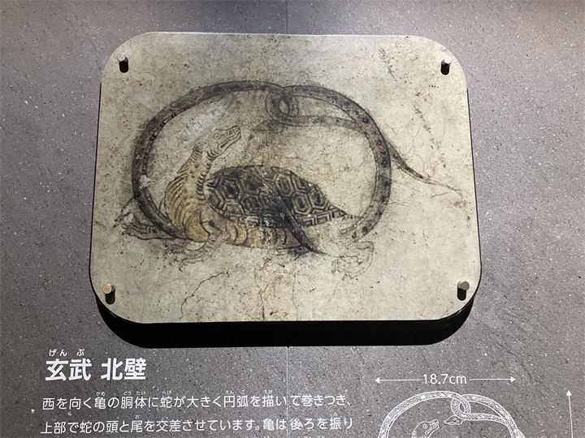
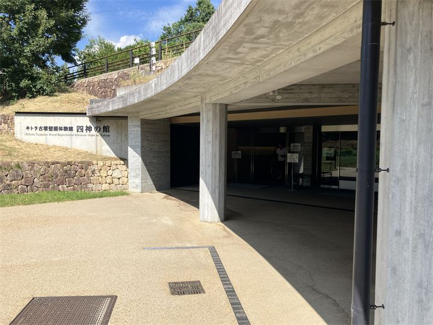
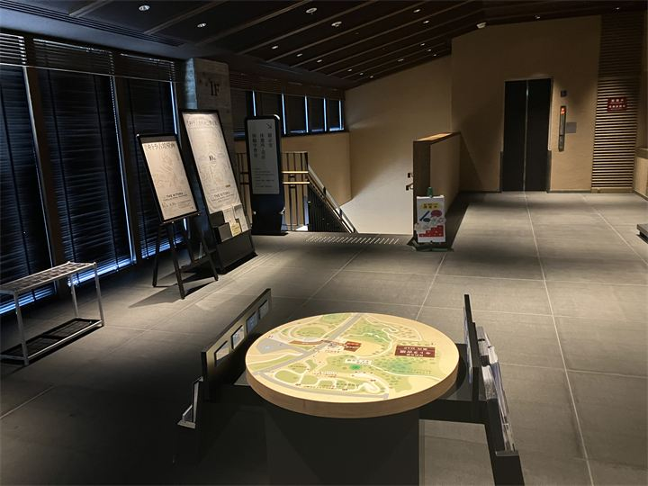

国宝キトラ古墳壁画の展示
四神像や天文図など、キトラ古墳から発見された貴重な壁画について学べます。

キトラ古墳壁画体験館 四神の館は、キトラ古墳の壁画や飛鳥時代の文化について学べる体験型施設です。 国宝に指定された四神像や天文図など、貴重な壁画の魅力を紹介し、映像や展示を通して古代の世界を楽しむことができます。 キトラ古墳と合わせて訪れることで、飛鳥時代の歴史をより深く感じられるスポットです。
| 営業時間 |
9:30〜17:00（3月〜11月） 9:30〜16:30（12月〜2月） |
|---|---|
| 定休日 | 水曜日、年末年始、指定休館日 |
| 料金 | 無料 |
| 所要時間 | 30分〜60分 |
| 駐車場 | キトラ古墳周辺地区 第一駐車場 |
| アクセス | 近鉄飛鳥駅から徒歩30分 |
| 地図 | 地図はこちら |

四神像や天文図など、キトラ古墳から発見された貴重な壁画について学べます。

映像や展示を通して、飛鳥時代の古代文化を分かりやすく楽しめます。
キトラ古墳壁画体験館 四神の館は、キトラ古墳壁画の保存・公開と、飛鳥時代の歴史を紹介するために整備された施設です。 キトラ古墳から発見された壁画は、日本の古代美術を知る貴重な文化財として国宝に指定されています。